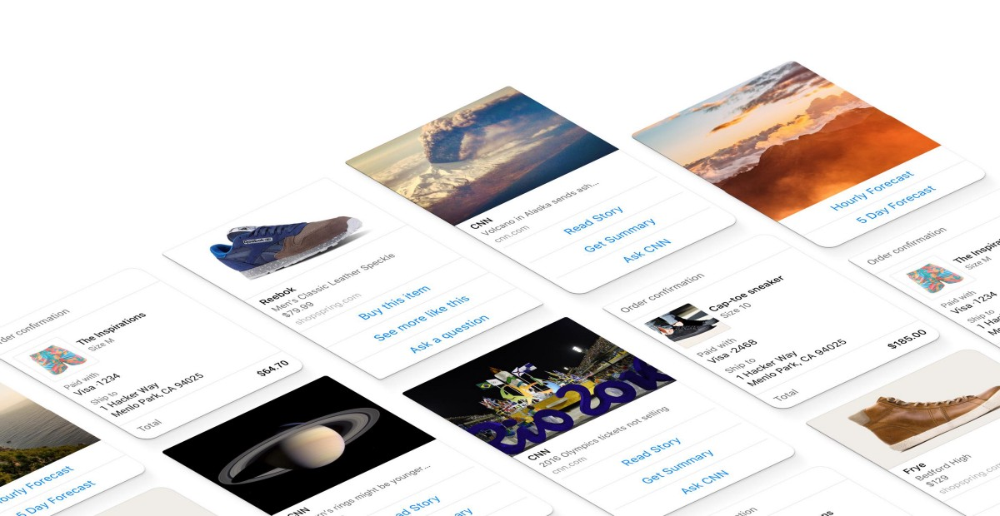
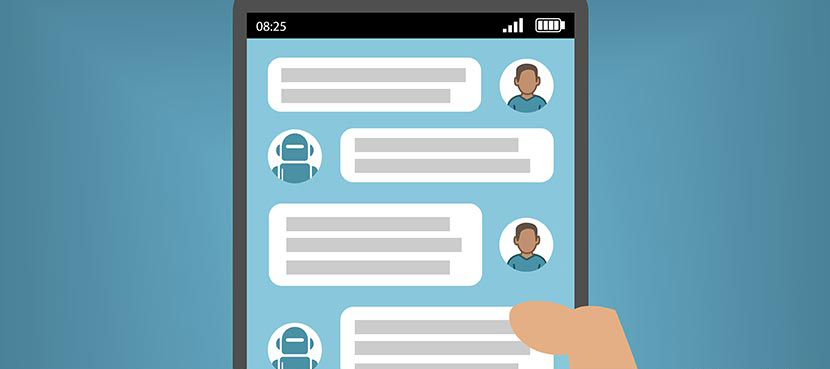

In this article we are going to answer the most popular questions about chatbots. What are bots? How do they work? Why do they give a big opportunity?
1. Easy receipts
What is a chatbot?
Chatbot is a computer program created as a conversational agent, designed to simulate an intelligent conversation with one or more human users via auditory or textual methods.
It is a service, powered by rules and sometimes artificial intelligence, that you interact with via a chat interface. Chatbot can be used for different purposes from functional to fun and it can live in any major chat product (like Text Messages, Facebook Messenger, Telegram ana so on).
For example, you want to buy shoes Nike online. To do this you should go to their website, look around until you find the shoes you wanted, and then purchase them.
If Nike makes a bot, you would simply be able to message them on Facebook. It would ask you what you’re looking for and you would simply tell it. Instead of browsing a website, you will have a conversation with the bot and it will be like… visiting the retail store.
And there are many different ways to use a chatbot. It can be weather bot, which get the weather whenever you ask, grocery bot which will help you pick out and order groceries for the week, news bot - ask it to tell you when ever something interesting happens.
You can have personal finance bot that will help you manage your money better or even life advice bot listenig to your problems and helping to solve it. A bot can become your friend. For example, in China is a bot called Xiaoice, built by Microsoft, that over 20 million people talk to. And it isn`t the end. We can continue the list. With bots the possibilities are endless. You can think about your needs and imagine your own bot.
How do Chatbots Work? Two types of chatbots
There are two types of chatbots - one functions based on a set of rules, and the other more advanced version uses machine learning.
Chatbot that functions is very limited. This bot can only respond to very specific commands. If somebody says the wrong thing, it doesn’t know what it means. So this bot has clear boundaries and it is only as smart as it is programmed to be.
Chatbot that functions using machine learning has an artificial brain AKA artificial intelligence. You don’t have to be very specific when you are talking to it. It understands language, not just commands. This chatbot is constantly learning. It gets smarter when it talks with people and listens to their conversations.
“Beware though, bots have the illusion of simplicity on the front end but there are many hurdles to overcome to create a great experience. So much work to be done. Analytics, flow optimization, keeping up with ever changing platforms that have no standard. For deeper integrations and real commerce like Assist powers, you have error checking, integrations to APIs, routing and escalation to live human support, understanding NLP, no back buttons, no home button, etc etc. We have to unlearn everything we learned the past 20 years to create an amazing experience in this new browser.” — Shane Mac, CEO of Assist
Why Chatbots are such a big opportunity?
People often wonder what is special in the chatbots. They look like simple text based services. So what’s the big deal? We will try to answer these questions.
First of all, according to research, now people are using messenger apps more than they are using social networks.

“People are now spending more time in messaging apps than in social media and that is a huge turning point. Messaging apps are the platforms of the future and bots will be how their users access all sorts of services.” — Peter Rojas, Entrepreneur in Residence at Betaworks
And of course if you want to build a business online, you should build it where the people are. That place is now inside messenger apps.
“Major shifts on large platforms should be seen as an opportunities for distribution. That said, we need to be careful not to judge the very early prototypes too harshly as the platforms are far from complete. I believe Facebook’s recent launch is the beginning of a new application platform for micro application experiences. The fundamental idea is that customers will interact with just enough UI, whether conversational and/or widgets, to be delighted by a service/brand with immediate access to a rich profile and without the complexities of installing a native app, all fueled by mature advertising products. It’s potentially a massive opportunity.” — Aaron Batalion, Partner at Lightspeed Venture Partners
This is why chatbots give you such big opportunity. It is a good chance to create a successful business, to build something people want.
“There is hope that consumers will be keen on experimenting with bots to make things happen for them. It used to be like that in the mobile app world 4+ years ago. When somebody told you back then… ‘I have built an app for X’… You most likely would give it a try. Now, nobody does this. It is probably too late to build an app company as an indie developer. But with bots… consumers’ attention spans are hopefully going to be wide open/receptive again!” — Niko Bonatsos, Managing Director at General Catalyst